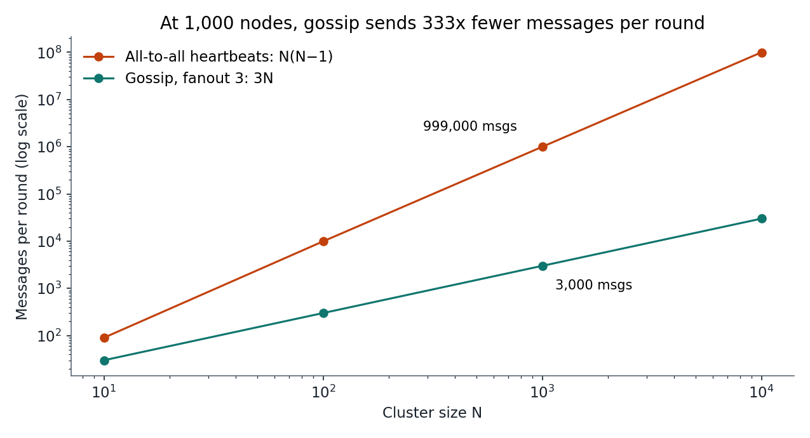
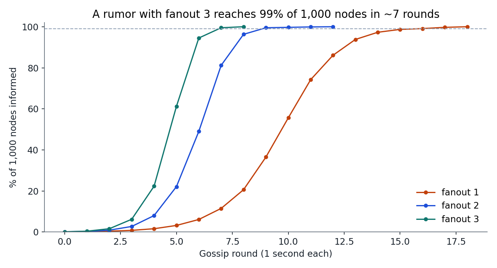
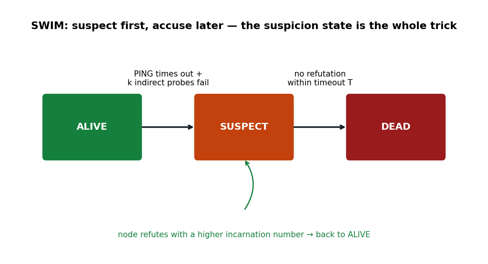
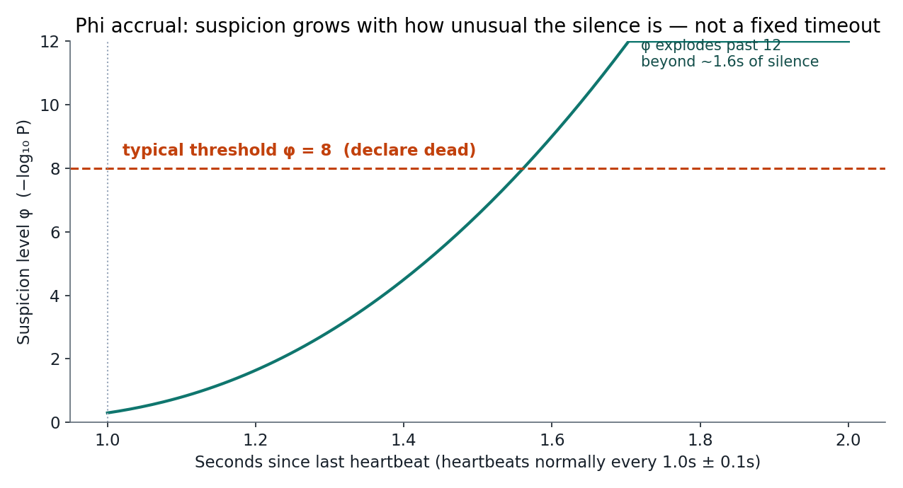

How does a 1,000-node cluster know who's alive? The obvious answer — every node pings every other node — costs about a million messages a round, and it gets worse exactly when the cluster gets bigger. The answer every real system uses instead is older than the web: gossip. Each node tells a few random peers what it knows, those peers tell a few more, and the whole cluster converges in about seven seconds — at a cost per node that never grows. Cassandra, Consul, and Dynamo all run on it. This is the protocol that makes membership possible at a scale where central registries and all-to-all heartbeats both fall over.
The ELI5 version
Imagine a rumor in a school of 1,000 kids. If the first kid tells 3 random kids, and each of them tells 3 more, the rumor roughly triples every round: 1, 3, 9, 27, 81, 243, 729, then everyone. Seven rounds and the whole school knows. Nobody needed a list of all 1,000 kids, nobody needed a principal's office to coordinate, and if a few kids are absent, the rumor just routes around them. That is a gossip protocol. The "nodes" are the kids, the "rounds" are one-second gossip exchanges, and the "rumor" is a piece of cluster state — node 47 just joined, node 812 stopped answering, this key's newest value is X. The math is the same math epidemiologists use for viruses, which is why the 1987 paper that started it all called them epidemic algorithms.
Why the obvious answers break
A cluster has two questions to answer continuously: who is in it (membership) and who is alive (failure detection). The centralized answer is a registry — a service every node registers with and queries. It works until it doesn't: the registry is a single point of failure, a bottleneck under churn, and the thing you have to keep alive in order to know what else is alive. The decentralized answer that seems natural is all-to-all heartbeats: every node pings every other node once a second. At 10 nodes that is 90 messages a second — fine. At 100 nodes it is 9,900. At 1,000 nodes it is 999,000 messages a second, and each node is sending and receiving 999 heartbeats a second just to prove it exists. The cost per node grows with the cluster, which is the definition of a design that doesn't scale.
Gossip fixes the scaling by fixing the per-node cost. Each node talks to a small, constant number of peers per round — three is the usual number — regardless of cluster size. At 1,000 nodes that is 3,000 messages a round instead of 999,000: 333x fewer. At 10,000 nodes it is 30,000 instead of ~100 million. The trade is time: information spreads in rounds, not instantly. But the rounds are logarithmic, and logarithms are kind.

The epidemic math: log N rounds, plus stragglers
The core result, formalized by Demers and colleagues at Xerox PARC in 1987, is that when each of N nodes contacts K random peers per round, a new fact spreads through the cluster in O(log N / log K) rounds with high probability. The intuition is the tripling above: with fanout 3, the informed set multiplies by roughly 3 each round until it saturates. The companion notebook simulates it for 1,000 nodes: fanout 3 reaches 99% of nodes in about 7 rounds and 100% in about 8; fanout 2 takes 9 rounds to 99%; fanout 1 — each node tells exactly one random peer — needs about 16 rounds to 99% and 18 for the last straggler. The last few percent are always the slow part: random selection keeps missing the same stragglers, so the tail of the curve flattens. Production systems size their rounds accordingly — Cassandra gossips every second with up to 3 peers, so a membership change reaches a 1,000-node ring in well under 10 seconds, and the straggler tail is why nobody promises exactly 7.

There are three flavors, distinguished by which way information flows. Push gossip sends state to random peers — fast for spreading news, wasteful when nothing changed. Pull gossip asks a random peer what it knows — efficient when updates are rare, slow when they are frequent. Anti-entropy is the background repair process: two nodes periodically compare everything they hold and reconcile the differences, which is how a write that missed a replica during an outage eventually arrives. Dynamo-style stores make anti-entropy cheap with Merkle trees: instead of comparing every key (O(N)), each side hashes ranges of keys into a tree, compares the roots, and descends only into the branches that differ — O(log N) comparisons to find exactly which keys disagree. Gossip spreads the news; anti-entropy fixes the record.
SWIM: how a cluster notices a death
Gossip spreads the news, but something still has to notice a death in the first place — without the N² cost. That is SWIM, the Scalable Weakly-consistent Infection-style process group Membership protocol, from Das, Gupta and Motivala at UIUC in 2002. It is the canonical design, and HashiCorp's memberlist library implements it inside Consul, Serf and Nomad. SWIM has two ideas, and the second is the one that matters.
The first idea is cheap probing: each node picks one random member per period and sends a PING. If it gets an ACK within the timeout, the target is alive. If not, the prober does not accuse anyone yet — it asks K other random nodes to PING-REQ the target on their behalf. Only if every indirect probe also fails does the prober declare the target suspect. The indirect probes route around the common case that kills naive heartbeats: a transient network problem between two specific nodes, or a slow node that is alive but busy. With independent 1% packet loss and K=3, the chance that a live node is wrongly suspected is the chance that all four probes are lost — 0.01⁴, one in a hundred million per round — against 1% for a direct ping alone. The notebook works this out; the indirect probe is a four-orders-of-magnitude false-positive reduction for the price of three extra messages.
The second idea is the suspicion state itself. A suspect node is not dead — it is maybe dead, and the cluster gossips the suspicion while giving the node a chance to refute it. The refutation is an incarnation number: every node carries a counter it increments when it restarts or defends itself, and a suspicion message carrying an old incarnation number is discarded when the node answers back with a newer one. Only if no refutation arrives within timeout T is the node marked dead and the news gossiped as fact. The suspicion state exists because the worst failure mode in a distributed system is not a slow death — it is a false accusation. A node wrongly declared dead gets its work reassigned, its data re-replicated, and its connections dropped, and then it comes back to a cluster that has already moved on. SWIM's answer is to make "dead" a conclusion the cluster reaches slowly and can still reverse. HashiCorp's Lifeguard refinement, published in 2017, closes the loop from the other side: a node that is itself slow — overloaded, paused for garbage collection — becomes less quick to accuse others, because a struggling witness makes a bad judge.

Phi accrual: suspicion as a number, not a verdict
A fixed timeout — "no heartbeat in 5 seconds means dead" — is a binary detector, and binary detectors are brittle: set the timeout tight and a GC pause kills a healthy node; set it loose and a real failure takes minutes to notice. The phi accrual failure detector, from Hayashibara and colleagues in 2004 and used by Cassandra and Akka, replaces the verdict with a number. It watches the history of heartbeat arrival intervals, fits them to a distribution, and outputs φ (phi): the negative log of the probability that a heartbeat would be this late if the node were healthy. A heartbeat that arrives on schedule has φ near 0. A gap twice the usual interval on a steady node has φ in the double digits, because the observed silence is statistically extraordinary.
The formula is one line once you have the history: φ(t) = −log₁₀ P(T > t), where T is the inter-arrival time and t is the time since the last heartbeat. The threshold is yours to choose — φ = 8 is the usual one, meaning "this silence would happen by chance once in a hundred million heartbeats." The power is that the threshold adapts to the node: a node whose heartbeats jitter by ±100ms crosses φ = 8 after a much shorter silence than a node whose heartbeats jitter by ±2 seconds, because the same absolute gap is more surprising for the steady node. The notebook computes it for heartbeats every 1.0s ± 0.1s: φ is 1.6 at a 1.2-second gap, 6.5 at 1.5 seconds, and past 8 soon after — the suspicion curve is a cliff, not a slope, which is exactly what you want from a detector.

Why it breaks
Gossip has a failure mode that is easy to miss because it looks like success: it converges, but it does not agree. Two nodes can hold different views of the cluster for a few seconds, and for membership that is fine — but for decisions that need a single answer, it is fatal. You cannot elect a leader by gossip: two partitions can each gossip themselves into believing they hold the majority, and both elect a leader. You cannot take a lock by gossip. That is what Parts 1 and 2 of this season were for — leader election and consensus exist precisely because gossip's answer to "who decides" is "eventually, everyone, approximately." Gossip is the substrate consensus runs on, not a replacement for it.
The other breaks are operational. Gossip traffic is constant per node, which means it is also constant under churn: a cluster shedding and adding nodes every minute pays the same gossip tax as a stable one, and the messages carry full membership tables that grow with N. A network partition splits the gossip graph in two, and each side converges on a different, confidently wrong view of the whole — the suspicion mechanism will dutifully declare the other side dead, and the reunion has to reconcile two histories. And the straggler tail is real: the last 1% of nodes to learn a fact can take as long as the first 99%, so any system that needs everyone to know now needs something else — usually a broadcast tree, or Plumtree's hybrid of tree plus gossip for repair.
Where it lives, and the interview angle
The pattern to recognize in an interview is the shape of the problem, not the name of the protocol. "Design a membership system for 10,000 nodes" is a gossip question; the answer starts with "no central registry, constant cost per node, log N rounds," and then you name SWIM for failure detection and phi accrual for the threshold. Cassandra gossips every second with up to 3 peers and uses phi accrual; Consul, Serf and Nomad run HashiCorp's memberlist, SWIM plus Lifeguard; Dynamo and Riak use gossip for ring state and Merkle-tree anti-entropy for repair. If the interviewer asks what gossip can't do, the answer is the one from two paragraphs up: it converges, it doesn't agree — leaders and locks need Raft, and that is Part 2.
Takeaways
- Gossip trades instant knowledge for scalable knowledge. Constant cost per node (3 messages a round), logarithmic spread — a fact reaches 99% of 1,000 nodes in ~7 rounds with fanout 3.
- All-to-all heartbeats are the anti-pattern. At 1,000 nodes they cost 999,000 messages a round; gossip costs 3,000. The gap grows with N, which is the whole point.
- SWIM suspects before it accuses. Direct ping, then K indirect probes, then a suspicion state the node can refute with an incarnation number. A false death is more expensive than a slow one.
- Phi accrual makes suspicion a statistic. φ = −log₁₀ P(T > t) adapts the threshold to each node's own heartbeat history; the usual line is φ = 8.
- Gossip converges; consensus agrees. Membership, failure detection and anti-entropy are gossip jobs. Leaders, locks and exactly-once decisions are not — that is what Parts 1 and 2 were for.
Next in the series: Part 8 — Service Discovery & Health Checking, where gossip's membership list meets the question every client actually asks: which of these nodes should I talk to right now? Follow the dev.to profile for the next part.